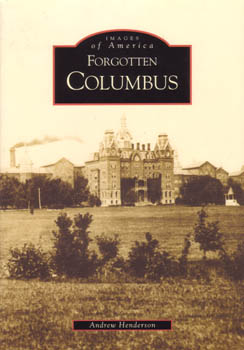

Ohio has a long and varied history. Within the 88 counties of the state you'll find some of the densest woods in the country, plenty of industrial wreckage (just drive through Cleveland or Youngstown), lots of abandoned houses, and about a million cool, deserted, rarely visited places. Even ghost towns--boom-and-bust industries like mining and timber have given Ohio a past on a par with the Rocky Mountain states. Here I give some of these places a showing-off. Choose below for a section of the page; explore abanonded places (featuring buildings and other landmarks), ghost towns, creepy cemeteries, or Ohio's haunted history. Find out about my books, Forgotten Columbus and Weird Ohio. And if you'd like to see what's new, Click Here for the Updates section.
Updated 5-16-2018

Forgotten Columbus and Weird Ohio -- my books
Like what you see? Don't like what you see?
Want to share an incident or the location of a haunted or abandoned place? Send me an E-MAIL.
forgottenohio@yahoo.com
facebook.com/andy.henderson.319
Forgotten Ohio on Facebook